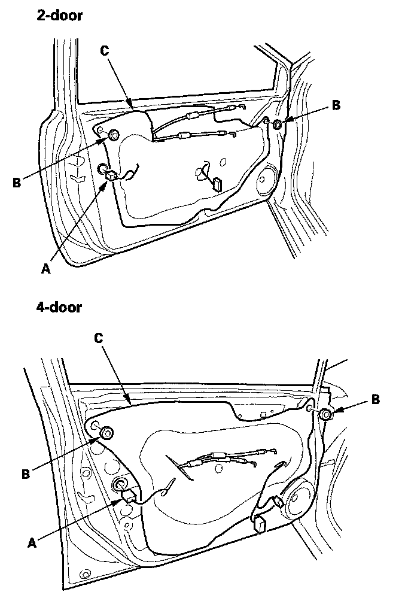
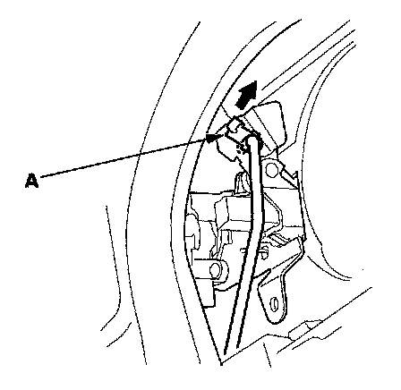
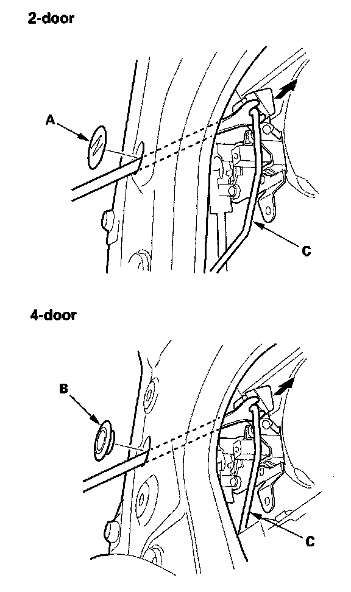
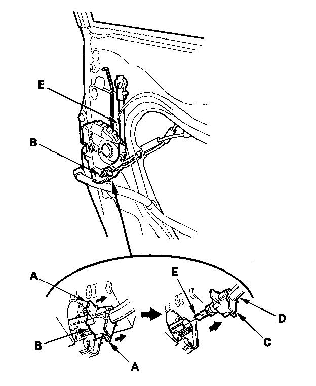
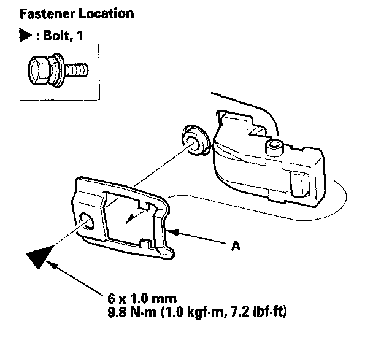
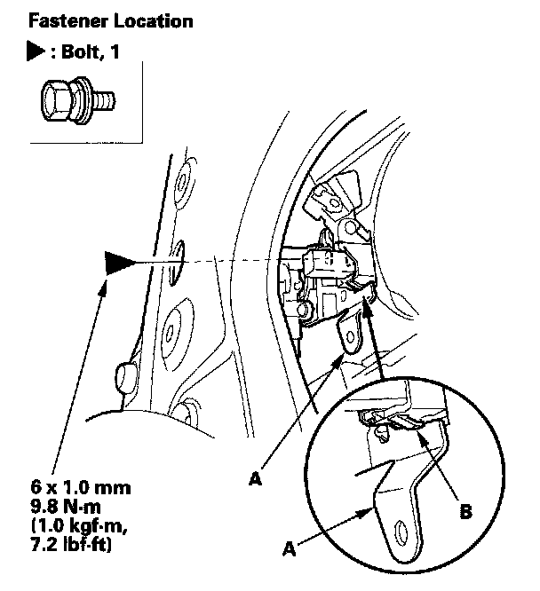
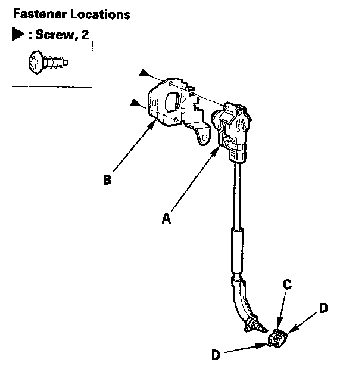
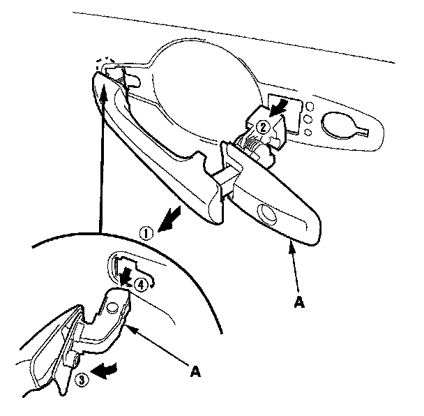
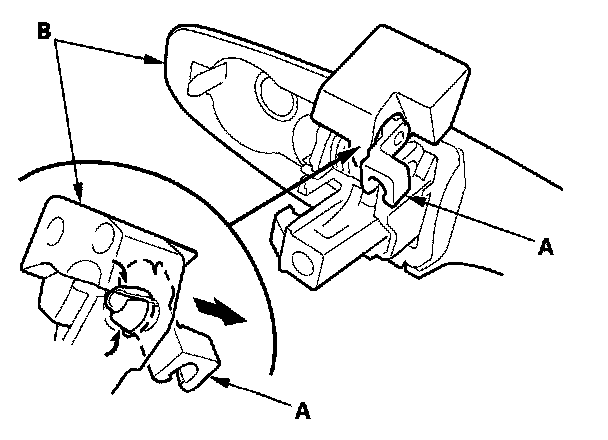

Front Door Exterior Handle: Service and Repair
Front Door Outer Handle ReplacementNOTE: Put on gloves to protect your hands.
1. Raise the glass fully.
2. Remove the door panel.

3. Disconnect the power door lock actuator connector (A).
4. Remove the plug caps (B), then remove the plastic cover (C), as needed.

5. Detach the rod fastener (A).

6. Remove the hole seal (A) (2-door) or maintenance cap (B) (4-door). With a clip remover, disconnect the outer handle rod (C).

7. Driver's and some passenger's: Pull both side flanges (A) of the retainer (B) outward, and pull the middle flange portion (C) of the outer casing cover (D) out, then disconnect the cylinder cable (E) from the latch.

8. Remove the bolt, then remove the spacer (A).

9. Remove the bolt securing the outer handle protector (A), then remove the protector by releasing the hook (B).

10. If necessary, remove the special screws, then separate the door cylinder (A) and outer handle protector (B). If the retainer (C) is damaged, release the hooks (D), and replace it.
NOTE: If removed, the special screws must be replaced.

11. While pulling the outer handle (A), remove the handle from the holes in the door panel. Take care not to scratch the door.

12. Remove the rod fastener (A) from the outer handle (B), then replace it with a new one.
13. Install the handle in the reverse order of removal, and note these items:
- Make sure the cylinder cable and each rod is connected securely.
- Make sure the door key cylinder/door locks operate properly.
- Make sure the door handle works properly.
- When reinstalling the door panel, make sure the plastic cover is installed properly and sealed around its outside perimeter to seal out water.
- Check for water leaks.